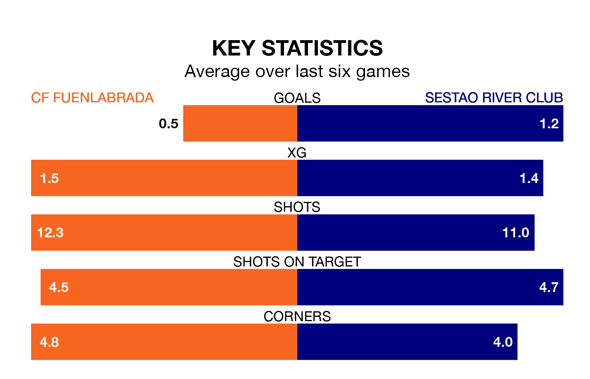

Struggling Sestao River Club face CF Fuenlabrada away at the Estadio Fernando Torres on Sunday looking to build on a win in their last league outing.
After securing all three points with a 1-0 victory over Arenteiro on February 4, Sestao River Club sit 18th in Primera Division RFEF Group 1.
They travel to play a Fuenlabrada side 13th in the standings, who lost in their last match, 4-1 against Deportivo La Coruña.
Fuenlabrada are in bad form in Primera Division RFEF Group 1, with no wins and three draws from their last six games.
With two wins and three draws over that period, Sestao River Club's form is much better – they have taken nine points from 18, compared to the home side's three.
In the last 10 years, Fuenlabrada and Sestao River Club have played each other on eight occasions. Fuenlabrada won five of them and Sestao River Club three.
On average, Fuenlabrada scored 1.5 goals and Sestao River Club 0.9 in those matches.
Their last meeting was on November 19, when Fuenlabrada won 2-1 away.
With 14 goals in 22 games so far this season, the visitors are the league's second-lowest scorers with 0.6 goals per game. And they are conceding more than average, letting in 26 goals at a rate of 1.2 per game.
Fuenlabrada are also below average scorers, with 0.9 goals per game, compared to a league average of 1.0. They have conceded 1.0 goal per game.
Updated: 11:18 (UTC), 08/02/24